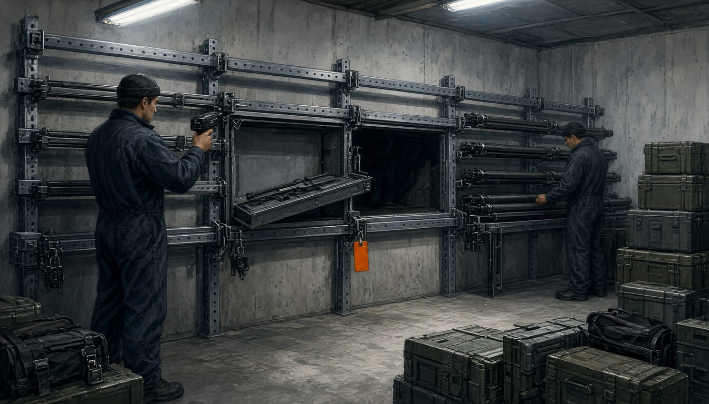

Two rifles missing from Belgian Defence stock, minister confirms
Defence Minister Theo Francken gave no details in reply to a parliamentary question, while Defence said further information cannot be given for reasons of operational security.

Two rifles, an Accuracy International AX338 and a Barrett M107A1, are missing from Belgian Defence's stock and have not been recovered, and it is unclear whether they were stolen or lost. The loss came to light through a parliamentary question from MP Peter Buysrogge (N-VA) to Defence Minister Theo Francken (N-VA) about military equipment gone missing.
In his reply, Francken gave no details on the circumstances in which the two rifles were lost. Defence said it cannot provide further information on the matter for reasons of operational security. Buysrogge said every lost weapon is one too many, but noted from the answer that Defence follows such losses closely. The news outlet Redactie24 judged the situation serious, while nothing confirmed so far points to a concrete threat to citizens.
Yves Huwart, chairman of the military trade union ACMP-CGPM, said on the Radio 1 programme VRT NWS De Ochtend that the loss of the two rifles is very hard to explain. He pointed to the complicated logistics of deployments around the world, where a weapons case can end up going the wrong way. He added that weapons are heavily secured, in armouries and in transport, but that there is no such thing as zero risk. Sources within Defence said that in an organisation of more than 25,000 soldiers, with exercises and operations abroad, losing material is hard to avoid.
The two rifles serve very different purposes. The AX338 is a precision weapon for sniper teams in specialised units; the Barrett M107A1 is an anti-materiel rifle that fires heavy 12.7 mm rounds.
Losses are not new: between 2017 and 2021 Defence lost 86 firearms, of which only about a third were recovered. When a weapon goes missing, Defence opens a standard investigation, and the police are called in if there are indications of theft. Defence has set out a wider plan to fit military material, from parachutes to firearms, with RFID labels so that stock can be counted faster and more precisely. Such tags carry a risk of their own: in an operational environment, the signal can reveal the position of soldiers and their weapons. Also still unclear, Redactie24 notes, is when the rifles were found missing, where they were last registered and whether ammunition is missing too.